Interface overview | Functionalities | Workflow example

Interface and 3D viewer. The left panel allows to select different control point actions, set the thresholding direction, switch between the threshold mask or value view, open the 3D viewer, load or save the work, change the opacity of the mask, the brightness and contrast of the MRI, and information about the imaging data. The central panel is a stereotaxic viewer which allows you to move through the slices using the slider at the bottom, to switch between the 3 stereotaxic planes, and to interactively set, move or remove control points. You can view the threshold mask, or the corresponding threshold value space. The right panel shows for each control point the stereotaxic coordinates, an adjustment slider to change the local threshold, and the threshold value. The selected control point is highlighted in the panel and the viewer jumps to the corresponding slice. The interactive 3D viewer opens in a separate browser window.
Load and navigate data. To load your data, drag and drop your Nifti volume (.nii.gz or .nii) onto the upload box. Your MRI will appear in a stereotaxic viewer where you can navigate through slices using the slider below the viewer and switch view planes using the buttons. The viewer is initialised with one control point at the centre of the MRI volume, producing a local threshold. You can then adjust the threshold, switch threshold direction, move the control point or add more. Adding more control points will create a space-varying threshold obtained by interpolation of all control points.
Adjust threshold value. Each local threshold can be adjusted in real time using its corresponding slider, or by entering a numerical value. The viewer is updated instantaneously.
Select the direction of thresholding. Depending on your imaging modality and the mask you would like to create, set the threshold direction according to the grey value gradient that fits your needs using the Select up or Down button in the left panel. The viewer is updated in real-time.
Move control point. To move a control point, select the Move tool in the left panel (shortcut M), and drag the control point into the desired position across the viewer. The threshold mask is updated in real-time.
Add control points. Select the Add tool in the left panel (shortcut A), and click in the desired position in the viewer. The control point will be set with the same threshold as the previous control point, and the corresponding slider setting, which can then be further adjusted. So, for example, you can set one control point outside the brain tissue, and decrease its value to exclude the background from your mask. You can then easily add more points outside of the brain, which will have the same settings. Similarly, if you set one control point inside the brain tissue to a good value, you can then add more points in other parts of the brain or across slices that should have a good initial value for inclusion into the mask.
Select a control point. Click the Select tool in the left panel (shortcut S) and then in the viewer click on the control point you want to select. Its corresponding threshold slider will be selected automatically. Vice versa, selecting a slider will automatically select the corresponding control point and jump to the corresponding slice in the viewer.
Remove a control point. Select the Remove tool in the left panel (shortcut R) and then in the viewer click on the control point you want to remove.
Adjust mask opacity. Select the opacity slider  in the left panel to change the opacity of the thresholded mask.
Adjust MRI contrast and brightness. Select the contrast or brightness slider in the left panel to interactively adjust contrast and brightness of the imaging data. Please note: The MRI data won't be changed, it is just the viewer.
3D render. Select the 3D render tool in the left panel to compute a 3D model of your mask on the fly and view it in an interactive 3D viewer. It will open in a separate browser window where you can zoom in and out and rotate the 3D object for inspection.
View Threshold Value. Select Threshold value in the left panel to view the threshold value corresponding to the current mask. These volumes are updated in real time and can both be inspected and modified interactively.
Saving. Save the control points together with your mask Nifti volume for a fully reproducible workflow.
Load Control Points. Load a list of control points from a json file. Please note that this replaces the current control points in case you placed some.
Load new MRI file. Simply reload the webpage to start working with a new MRI.
Reproduce the workflow offline. Once you downloaded the control points, you will be able to reproduce the thresholded mask volume using the thresholdmann.py script. It will take the source MRI, and the thresholdmann.json control points file to produce the mask volume, as in python thresholdmann.py input_nifti controlpoints_file output_nifti.

Usage example: Placing control points. Control points (blue dots) are added by clicking at the desired position in the viewer. This adds a slider to the right, which can be used to locally adapt the threshold. Progressively add control points to create a mask of the brain. The image shows this process for a macaque brain from Prime-DE site "amu" (Brochier et al. 2019, Milham et al. 2020).

Usage example: Resulting mask and space-varying threshold. Threshold mask and corresponding threshold value. These volumes are updated in real time and can both be inspected interactively. The set of control points and the mask can be downloaded.

Usage example: Final mask. Download the mask created based on your set of control points. Make sure that the brain region is sufficiently disjoint from the rest of the head so that a mathematical morphology closing will be enough to completely separate it. This will give you a mask like shown in this image with its reconstructed surface as an example.